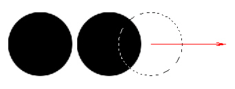

Лекция 2: Учимся рисовать в Photoshop
Adobe Photoshop по сравнению с векторными редакторами, например, CorelDRAW, имеет слабые инструменты для рисования изображений. Тем не менее, они есть и в этом примере мы с ними познакомимся.
Рисуем грузовик
Чтобы познакомиться с инструментами рисования Photoshop нарисуем что-нибудь простое, например, грузовик (автофургон). Выполните команду Файл-Создать и создайте новый пустой документ формата A4 ( рис. 2.1). Нажмите ОК.
Рис. 2.1. Создаем пустой документ (страницу для рисования)
На палитре инструментов найдите инструмент Прямоугольная область (М) - рис. 2.2.
Рис. 2.2. Инструмент Прямоугольная область
Примечание
Буква "М" означает, что инструмент Прямоугольная область можно вызвать не только из палитры инструментом, но и нажатием этой "горячей" клавиши на клавиатуре ПК.
Нарисуйте этим инструментом кузов и кабину грузовика, например, так ( рис. 2.3). Изначально была произведена разметка рабочего листа синими непечатаемыми линиями. Их можно вытянуть из линеек мышкой, а линейки вызвать командой Просмотр-Линейки.
Рис. 2.3. Кузов и кабина нарисованы
Закраска нарисованных элементов грузовика была произведена инструментом Заливка (G) - рис. 2.4. По умолчанию цвет заливки черный, т.е. задавать его специально не нужно.
Рис. 2.4. Инструмент Заливка
Теперь нарисуем колеса. Для создания колеса выберите инструмент Овальная область (M) и, удерживая клавишу Shift, нарисуйте окружность ( рис. 2.5).
Рис. 2.5. Инструмент Овальная область
Залейте окружность черным цветом, используя инструмент Заливка (G) и, не снимая выделение, создайте копию колеса, то есть, удерживая нажатой клавишу Shift, перемещайте на клавиатуре горизонтальную стрелку вправо ( рис. 2.6).
Рис. 2.6. Момент рисования колес грузовика копированием исходного колеса
Залить колесо не черным, а серым цветом можно так. Найдите в нижней части палитры инструментов черно-белый индикатор основного цвета (им вы рисуете) и цвета фона ( рис. 2.7).
Рис. 2.7. Индикатор основного цвета и цвета фона
Щелкните на основном цвете мышкой - появится Палитра цветов ( рис. 2.8). Здесь вы можете задать любой цвет, которым вы хотите рисовать или закрашивать объекты Photoshop.
Рис. 2.8. Выбираем серый цвет для колес грузовика
Закрасьте колеса серым цветом и нарисуйте еще несколько направляющих линий по центру колес ( рис. 2.9). Далее выделите инструментом Овальная область (M) в одном из колес круг меньшего размера и залейте его белым цветом (можно просто нажать на клавишу Delete). Затем скопируйте белый круг в центр каждого колеса.

Рис. 2.9. Колеса почти нарисованы
Грузовик получился мрачный, но мы оживим его, наклеив на кузов цветную картинку с указанием профиля перевозок. Картинку мы открыли в Photoshop и скопировали на кузов грузовика командами: Выделение-Все, Редактирование-Скопировать, Файл-Закрыть и Редактирование-Вставить. Как видим, масштаб кузова и масштаб картинки на кузов не совпадают - рис. 2.10.
Рис. 2.10. Масштаб кузова и масштаб логотипа не совпадают
Исправить ситуацию можно командой Редактирование-Трансформирование-Масштабирование. В результате этой команду вокруг логотипа появятся маркеры, с помощью которых размер логотипа можно подогнать под размер кузова мышкой ( рис. 2.11).

Рис. 2.11. Логотип размещен на кузове грузовика
Теперь напишем текст и уберем линейки и направляющие линии, убрав галочки для команд Просмотр-Линейки и Просмотр-Вспомогательные элементы. На этом работу закончим ( рис. 2.12).
Рис. 2.12. Грузовик нарисован
Сохранить его на диск или вашу флешку можно командой Файл-Сохранить Как.
Вам была показана общая методика рисования в Photoshop и теперь вы сможете нарисовать свой вариант грузовика, например, такой ( рис. 2.13).
Рис. 2.13. Другой вариант грузовика